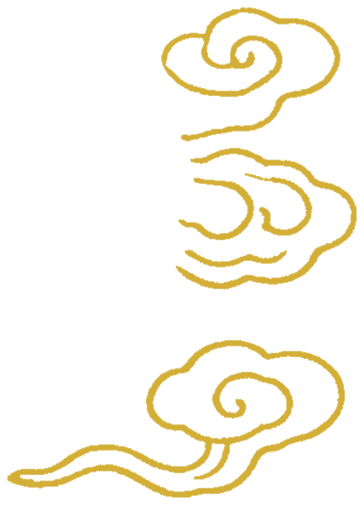

纹脉 · 全量元素库
6 张纹样图 × decompose + DBSCAN 语义分组
总元素
45
huiwen
3
juanco2
3
lianhua
2
tuanlong
10
yunlei
27
huiwen · 4c · 1164467px
tuanlong · 2c · 225123px
yunlei · 4c · 168120px
yunlei · 4c · 167876px
yunlei · 4c · 167455px
yunlei · 4c · 166853px
yunlei · 1c · 145426px
yunlei · 1c · 109315px
yunlei · 1c · 108641px
yunlei · 1c · 73318px
yunlei · 1c · 71698px
yunlei · 1c · 43787px
yunlei · 1c · 43096px
yunlei · 4c · 41554px
yunlei · 4c · 41437px

tuanlong · 6c · 21794px
yunlei · 1c · 20463px
yunlei · 1c · 20251px
tuanlong · 2c · 16824px
lianhua · 9c · 13808px
tuanlong · 9c · 13761px
huiwen · 9c · 13683px
juanco2 · 9c · 13648px
lianhua · 5c · 11489px
tuanlong · 5c · 11377px
huiwen · 5c · 11358px
juanco2 · 5c · 11324px
yunlei · 4c · 9730px
yunlei · 4c · 9494px
tuanlong · 4c · 8911px
yunlei · 4c · 7725px
tuanlong · 5c · 7711px
yunlei · 3c · 7696px
tuanlong · 1c · 6054px
tuanlong · 4c · 5383px
yunlei · 2c · 3426px
yunlei · 1c · 2935px
yunlei · 1c · 2349px
yunlei · 1c · 2292px
yunlei · 1c · 2160px
yunlei · 1c · 2122px
tuanlong · 1c · 1673px
yunlei · 2c · 1170px
yunlei · 1c · 934px
juanco2 · 1c · 625px